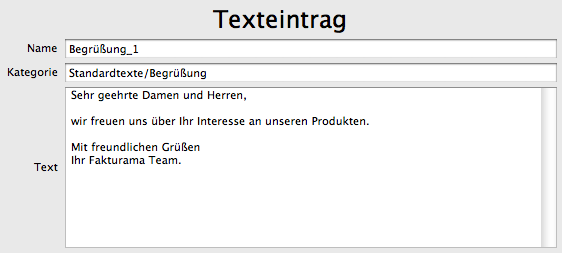

Es ist möglich standardisierte Texte abzulegen, die mit einem Klick verwendet werden können. Zum Beispiel im Dokumenteneditor.
Eindeutiger Name des Textes.
Kategorie, in die der Text einsortiert wird. Die Verwendung von Unterkategorien ist möglich. Die Bezeichnungen sind dann durch einen Schrägstrich / zu trennen. Beispiel:
Hauptkategorie/Unterkategorie/WeitereUnterkategorie
Der eigentliche Text.